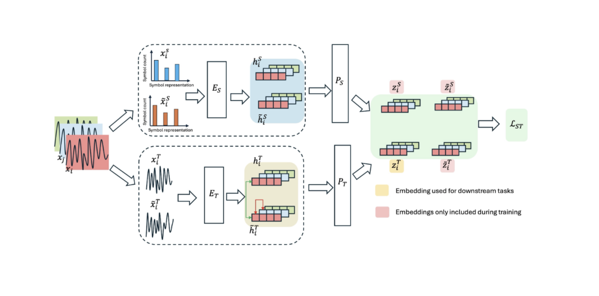
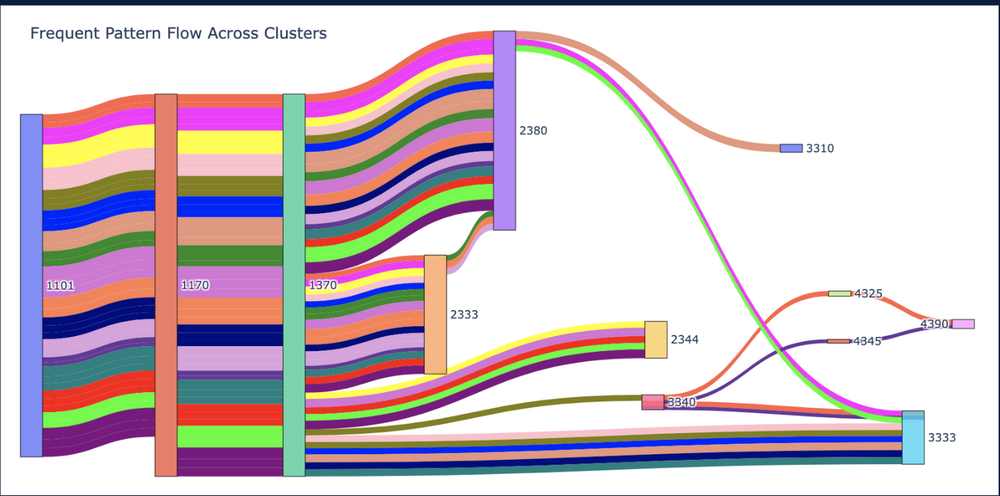
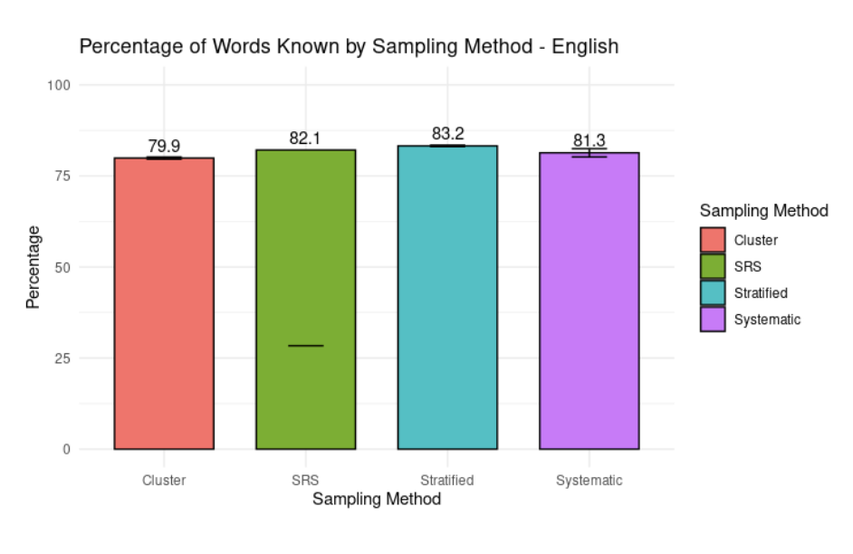
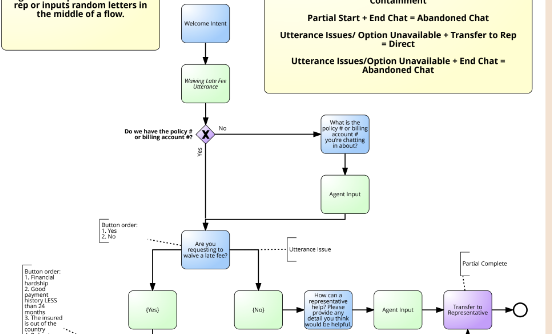
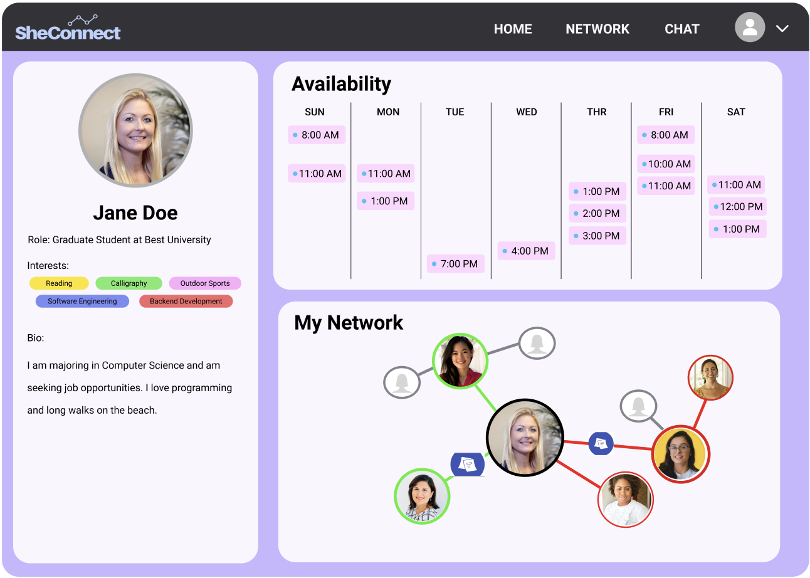
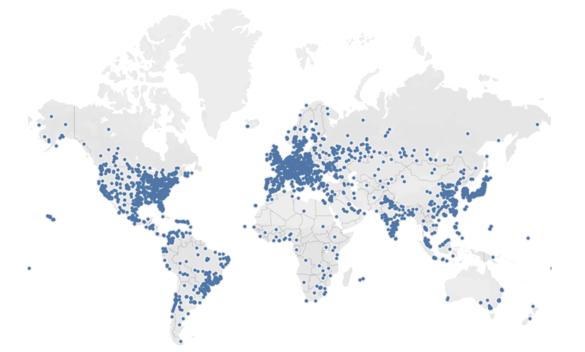

Developed and implemented a novel adaptation to the Time-Frequency Consistency (TFC) framework, focusing on symbolic
representations, to enhance self-supervised contrastive learning for time series data.

Conducted data-driven exploration of Computer Science students academic pathways, employing clustering and visualization
techniques. Leveraged a KNN model on a subset of data, achieving an accuracy of 79%, uncovering insights into the influence of similar
academic journeys on degree completion at my university

Developed and executed a comprehensive project in my sampling course, leveraging R to experiment with diverse sampling methods.
Explored the pros and cons of each method through the unique approach of sampling pages from a dictionary, aiming to estimate the
percentage of the entire dictionary known.

Led project team to integrate AI chatbots into Farmers’ existing programs to identify the context of customer questions to help with chat
routing flow. Streamlined intent classification, improved accuracy, and enhanced user experience by leveraging AI and natural language.

A website that uses machine learning and artificial intelligence to connect like-minded women+ in tech. Handled UX/UI design and prototyping.
Won first place at Technica, a hackathon for underrepresented genders.

Many non-democratic countries censor websites for a variety of reasons, limiting free speech and human rights.
We developed a web app that determines how likely a selected country is to censor a website. This predictive model can
be used by companies looking to expand globally, activists who need to know what sites will alert their government, and many others.